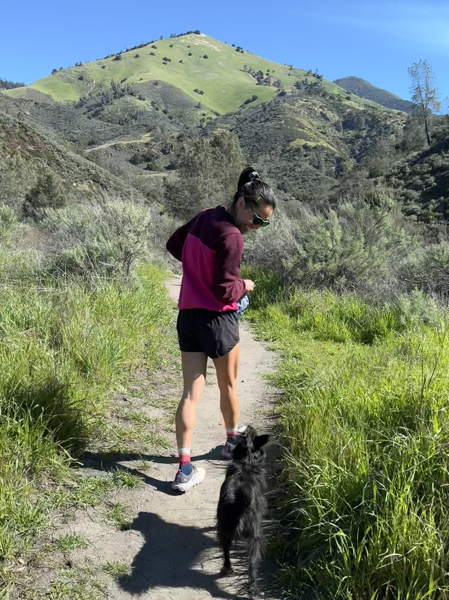

 My name is Lauren (she/her/hers); I am a systems-thinking Senior GIS Analyst / Associate Remote Sensing Specialist with eight years of professional experience calibrating, managing, analyzing, and visualizing geospatial data (ArcGIS Story Map Resume). I am driven to provide the most efficient, accurate, and interpretable geospatial solutions that promote environmental and social sustainability. In my spare time I enjoy running and exploring the outdoors with my pup, Ruthie. In the tabs below I highlight Geospatial Toolbook, which I'm assembling to help others fully utilize geospatial data; along with some other past research, class projects, web maps I've made for fun. Please feel free to reach out at laurensharwood@gmail.com or connect with me on Linkedin.
Tool-Book aims to provide high-level information and free resources to make geospatial data, analysis methods, and insights more accessible.
1) code from emLab projects.
2) code for various geospatial libraries (ArcPy, GDAL, Google Earth Engine, GeoWombat).
3) _utils.py files (general, db, vector, raster, geo, gee, plot), which have functions to import into another notebook or python script.
Master's Thesis: Modeling Environmental Factors Related to Drought-Induced Tree Mortality Based on Lidar and Hyperspectral Imagery
Master's Thesis (2021)
Thesis Defense Presentation (2021)
Class projects:
Research Brief about remote sensing's role in Forest Management, for Forest Ecology (2019)
Random Forest Classification of powerlines using surface height rasters from lidar, for Spatial Quantitative Analysis II (2018)
Spatial Hedonic Regression to predict housing prices combining census data with other remotely sensed data, for Spatial Quantitative Analysis II (2018)
Teaching Assistant (TA) for:
GEOG 488/588 GIS II: Advanced GIS
GEOG 380: Intro to Maps and Geographic Information
Class projects:
Predicting rice yield individual project poster, for RS of the Envt III (2016)
Modeling Zika infections group project poster, for GIS III (2016)
Environmental Impact Report (EIR) Biological Resource writing sample, for Environmental Impact Analysis (2015)